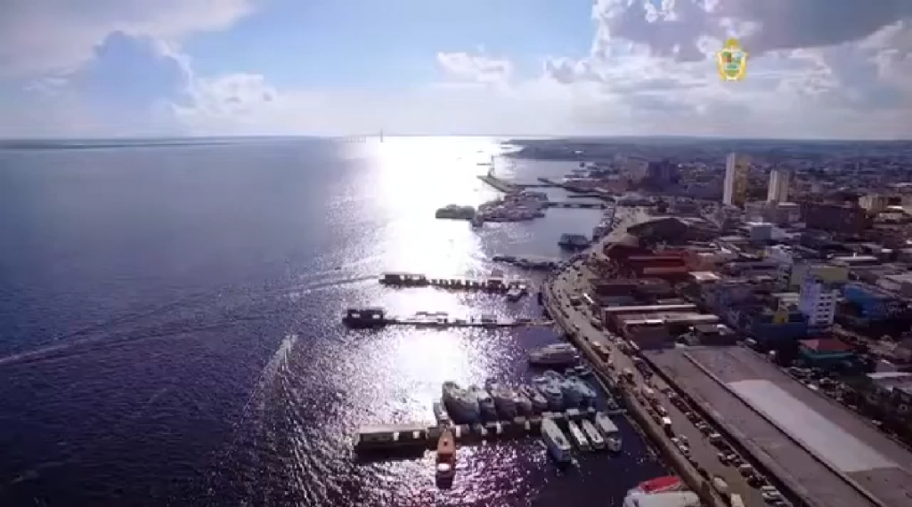
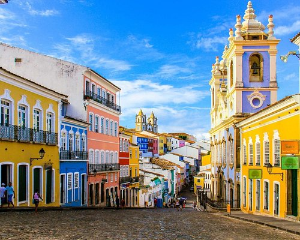
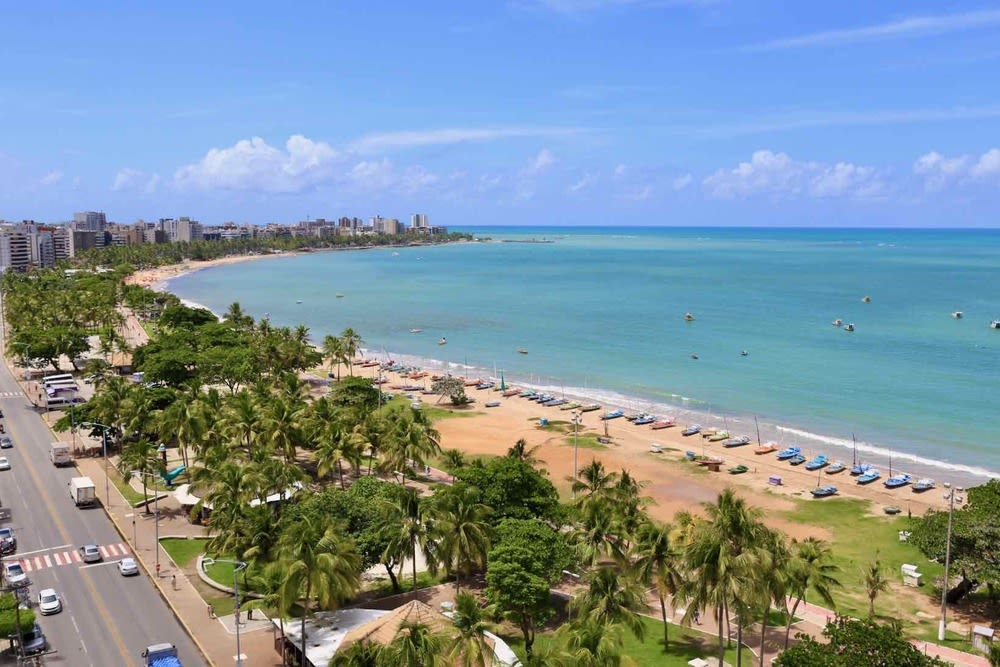

Cartões Postais
Rio de Janeiro
O Rio de Janeiro é a segunda maior cidade do Brasil e uma das mais famosas do mundo. Conhecida por suas belas praias, sua cultura vibrante e seu carnaval animado, o Rio é um destino imperdível para quem quer conhecer o Brasil.

Manaus
Seja na língua, gírias, costumes, culinária, hábitos, ou mesmo na arquitetura, festividades típicas, artes e na tão característica hospitalidade, a Metrópole do Norte do País, a Paris dos Trópicos, Manaus é um convite à imersão em um Brasil que você só encontra aqui!
Salvador
Salvador, capital da Bahia, é um dos destinos mais intensos do Brasil. Repleta de história, cultura, tradições, cores e sabores, a cidade é um convite a curtir cada minuto. Impossível não se envolver em tudo o que o destino baiano oferece e mais difícil ainda não sair de lá com vontade de voltar.
Florianópolis
Com aproximadamente 407 mil habitantes, Florianópolis é um local único. É difícil escolher a praia mais bonita, a lagoa mais romântica, o lugar mais charmoso. Floripa, como é carinhosamente chamada, encanta de tal forma os visitantes que muitos deles não voltam para casa e acabam escolhendo esse paraíso com mais de 100 diferentes praias para viver.

Maceió
Já cantava Luiz Gonzaga: "Alagoas tem joias tão caras que meus olhos não cansam de olhar / Uma delas és tu, Pajuçara, / Praia linda engastada no mar (...)". Com um mar verde que não fica devendo em nada ao do Caribe, piscinas naturais de águas cristalinas e barreiras de corais que fazem com que as praias se tornem verdadeiras piscinas, Maceió e suas adjacências conquistam visitantes à primeira vista.
